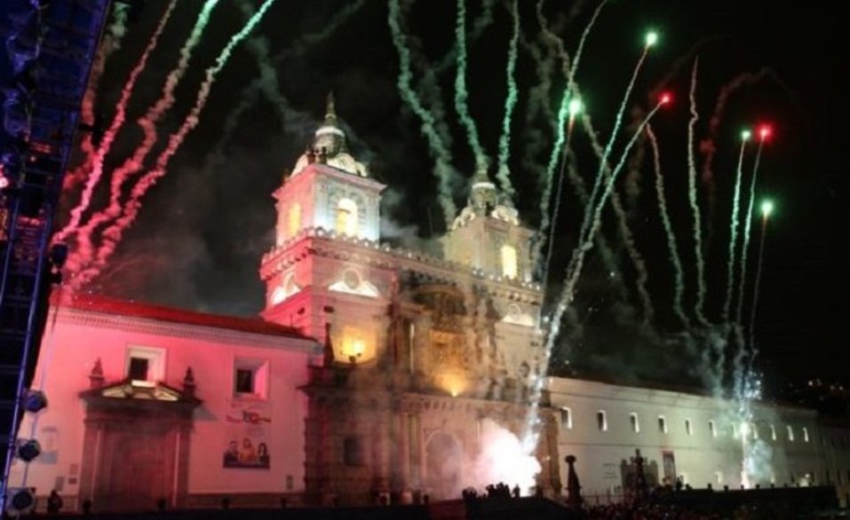
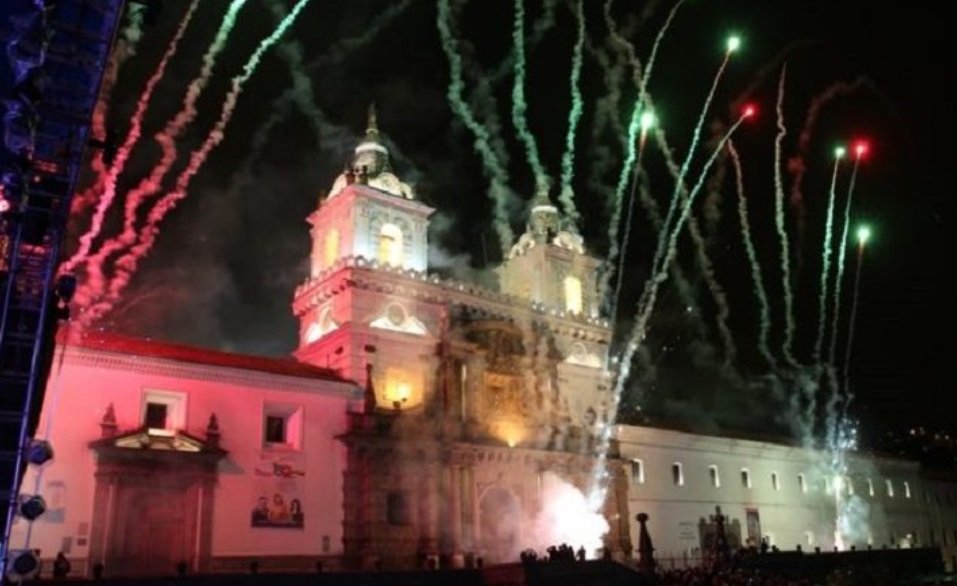
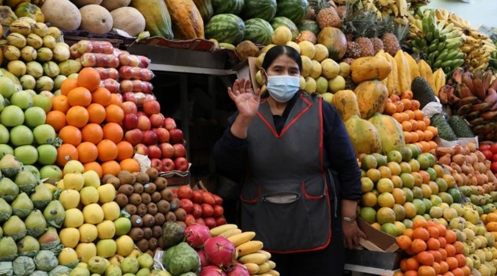

Fiestas y Tradiciones
Celebra junto a los quiteños en sus festividades más emblemáticas y coloridas.
Bienvenido a la capital eterna de Ecuador, un lugar donde la historia, la cultura y la naturaleza se encuentran.
Celebra junto a los quiteños en sus festividades más emblemáticas y coloridas.
Explora la autenticidad de Quito en sus mercados, donde cada puesto te ofrecerá una experiencia única.
